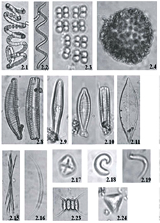

Referencias
- Castillo, R. M.E. 1998 Amelia Sámano Bishop. En: Premio Universidad Nacional 1895-1997. Nuestros Maestros Tomo IV. Dirección General de Asuntos del Personal Académico. Universidad Nacional Autónoma de México.
- Godínez, O.J. 2008. Colectores de algas en México (1787-1954). Acta Botánica Mexicana 85:75-97.
Amelia Sámano Bishop
1900 - 1998
Amelia Sámano Bishop fue pionera en el estudio de las algas a principios del siglo XX en México. Nació en San Nicolás del Oro, en el estado de Guerrero en 1900 y murió en 1998.
Se graduó como bachiller en Artes en el Colegio de Arkansas en Estados Unidos. En 1935 estudió la maestría en Ciencias Biológicas en la Facultad de Filosofía y Letras y cuatro años más tarde el doctorado en Ciencias Biológicas en la Facultad de Ciencias, ambos en la Universidad Nacional Autónoma de México (UNAM).
En la UNAM participó en la fundación del Instituto de Biología así como del Departamento de Embriología de la Facultad de Medicina y el de Biología en la Facultad de Ciencias.
Realizó alrededor de 30 trabajos de investigación, muchos de ellos sobre las algas de agua dulce del Valle de México. Se dedicó también a la docencia, impartió clases de embriología, histología comparada, biología general y técnicas selectas de laboratorio.
Colaboró con la Secretaría de Salubridad y Asistencia, impartiendo cursos sobre oncología y embriología en diferentes hospitales, y realizando expediciones por el país para el estudio de enfermedades de origen tropical.
Su hermana Eva Sámano Bishop fue Primera Dama de México (1958-1964), esposa del presidente Adolfo López Mateos.
Naturalistas siglo XX
Aportación

Artículo:
Microalgas del Área Natural Protegida Ejidos de Xochimilco y San Gregorio Atlapulco, México
Revista: CienciaUAT 2015 9(2)